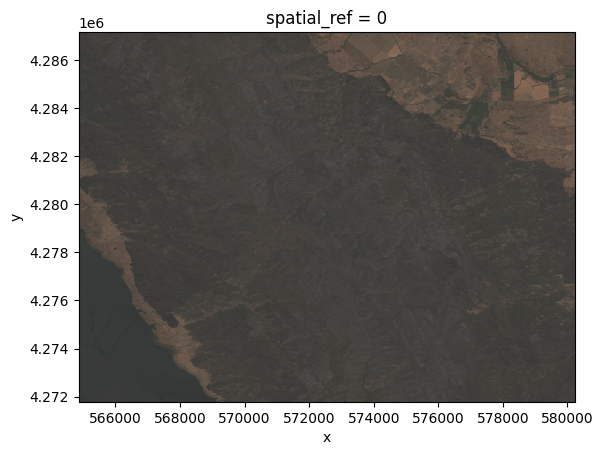
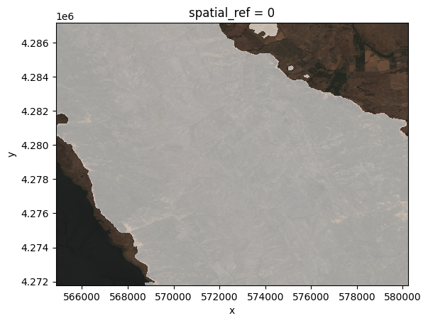
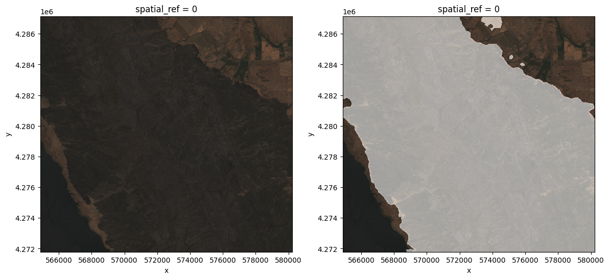
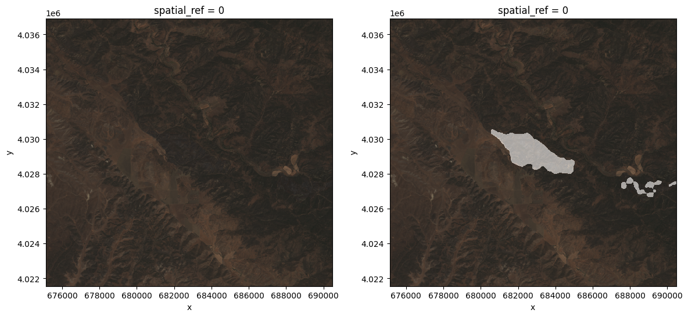
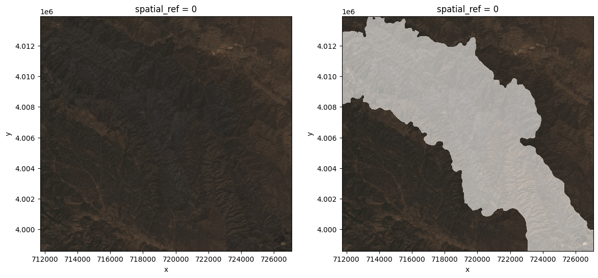
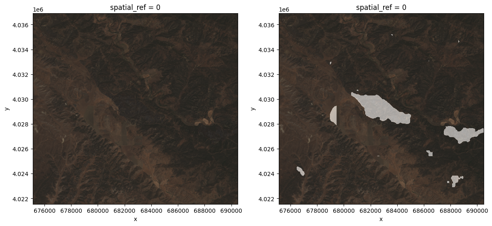
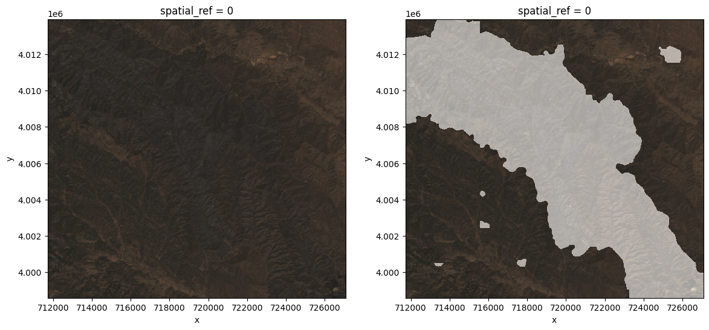

Performing a simple inference task using the TerraTorch's script interface.#
Direct inference (or full image inference).#
import argparse
import os
from typing import List, Union
import re
import datetime
import numpy as np
import rasterio
import torch
import rioxarray
import yaml
from einops import rearrange
from terratorch.cli_tools import LightningInferenceModel
from terratorch.utils import view_api
The directory in which we will save the model output.#
The path to the configuration (YAML) file.#
The path to the local checkpoint (a file storing the model weights).#
The path for the directory containing the input images.#
An image chosen to be used in the single-file inference.#
A list indicating the bands contained in the input files.#
A subset of the dataset bands to be used as input for the model.#
Creating a directory to store the output (when it does not exist).#
Instantiating the model from the config file and the others arguments defined previously.#
lightning_model = LightningInferenceModel.from_config(config_file, checkpoint, predict_dataset_bands, predict_output_bands)
Performing the inference for a single file. The output is a tensor (torch.Tensor).#
tensor([[1, 1, 1, ..., 0, 0, 0],
[1, 1, 1, ..., 0, 0, 0],
[1, 1, 1, ..., 0, 0, 0],
...,
[0, 0, 0, ..., 1, 1, 1],
[0, 0, 0, ..., 1, 1, 1],
[0, 0, 0, ..., 1, 1, 1]])
Visualizing the input image.#
From the file object fp we select just the bands corresponding to RGB (indexes que correspondem aos índices 2, 1 and 0 of the TIFF file) for sake of visualization. Notice that we added a shift to white (fp[[2,1,0]]+0.20) in order to lighten the image.
import rioxarray
fp = rioxarray.open_rasterio(example_file)
(fp[[2,1,0]]+0.20).plot.imshow(rgb="band")

Visualizing the output image.
import matplotlib.pyplot as plt
(fp[[2,1,0]] + 0.10 + 0.5*np.stack(3*[prediction], axis=0)).plot.imshow(rgb="band")

We also can perform inference for an entire directory of images by using the
This operation will return two lists, one containing predictions and another with the names of the corresponding input files.
for pred, input_file in zip(predictions, file_names):
fp = rioxarray.open_rasterio(input_file)
f, ax = plt.subplots(1,2, figsize=(14,6))
(fp[[2,1,0]]+0.10).plot.imshow(rgb="band", ax=ax[0])
(fp[[2,1,0]] + 0.10 + 0.5*np.stack(3*[pred], axis=0)).plot.imshow(rgb="band", ax=ax[1])



Tiled Inference#
Now let's try an alternative form of inference - tiled inference. This type of inference is useful when the GPU (or the RAM associated with the CPU, if applicable) is insufficient to allocate all the information needed to run the model (basic libraries, model and data), because instead of applying the model to the whole image, it divides it into small rectangles, the dimensions of which are defined by the user, applies the model separately and then reconstructs the output figure. To perform this type of inference, we will use the file below.
Notice that the content is identical to the other YAML file, but the addition of the subfield:#
to the variables sent to the fieldmodel. The variables containing the suffix _crop refer to the dimensions of the tiles while those ones with the suffix _stride control the distance between them (the tiles can overlap).
lightning_model = LightningInferenceModel.from_config(config_file_tiled, checkpoint, predict_dataset_bands, predict_output_bands)
for pred, input_file in zip(predictions, file_names):
fp = rioxarray.open_rasterio(input_file)
f, ax = plt.subplots(1,2, figsize=(14,6))
(fp[[2,1,0]]+0.10).plot.imshow(rgb="band", ax=ax[0])
(fp[[2,1,0]] + 0.10 + 0.5*np.stack(3*[pred], axis=0)).plot.imshow(rgb="band", ax=ax[1])

